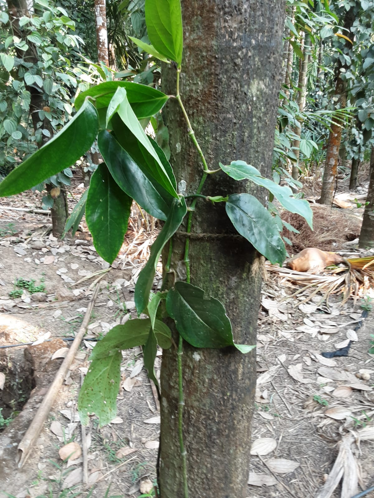
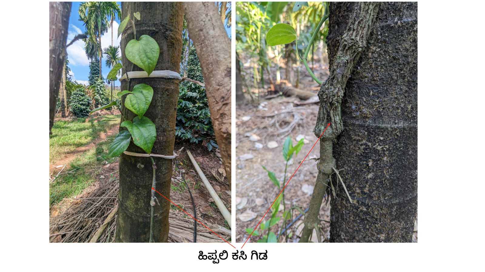
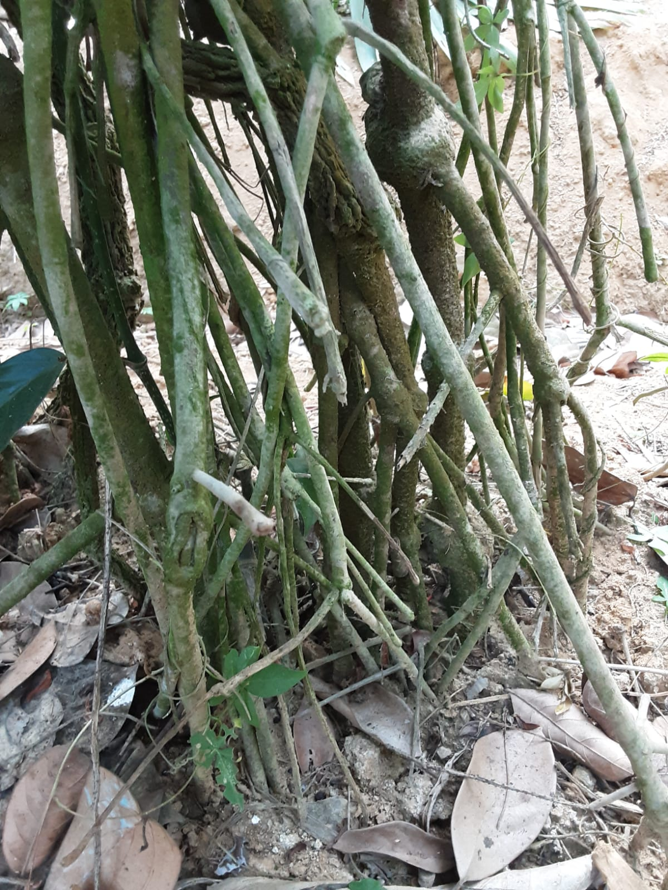

ಹಿಪ್ಪಲಿ ಕಸಿ ವಿಧಾನ
ಬುಡ ಕೊಳೆ ರೋಗ ನಿರೋಧಕ ಮೆಣಸಿನ ಬಳ್ಳಿಗಳನ್ನು ತಯಾರಿಸಲು ಹಿಪ್ಪಲಿ ಗಿಡದ ಬುಡಕ್ಕೆ ಮೆಣಸಿನ ಬಳ್ಳಿಯನ್ನು ಕಸಿ ಮಾಡುವುದು ಒಂದು ಉತ್ತಮ ವಿಧಾನ. ಹಿಪ್ಪಲಿ ಒಂದು ಪೊದೆ ಗಿಡ( shrub). ಇದರ ವೈಜ್ಞಾನಿಕ ಹೆಸರು Piper brazaliensis. ಇದನ್ನು ಇದರ ಕಾಂಡದ ತುಂಡುಗಳಿಂದ ಸುಲಭವಾಗಿ ಬೇರು ತರಿಸಿ ವೃದ್ಧಿ ಮಾಡ ಬಹುದು. ಇದು ಮಣ್ಣಿನಲ್ಲಿ ಅಧಿಕ ತೇವಾಂಶ/ ಜವಳು ಇದ್ದರು ಹೆದರದೆ ಹುಲುಸಾಗಿ ಬೆಳೆಯುತ್ತದೆ. ಇದನ್ನು ಅಡಿಕೆ ಮರದ ಬುಡದಲ್ಲೇ ಬೆಳೆಸಿ ನೆಲದಿಂದ 3 ಅಡಿ ಎತ್ತರದಲ್ಲಿ ಅದಕ್ಕೆ ಕಾಳು ಮೆಣಸಿನ ಬಳ್ಳಿಯ ಕಾಂಡದಿಂದ ಕಸಿ ಮಾಡಿ ಬೆಳೆಸುತ್ತಾರೆ. ಇಲ್ಲವೇ ನುರ್ಸರಿಯಲ್ಲೇ ಕಸಿ ಮಾಡಿದ ಹಿಪ್ಪಲಿ ಗಿಡ ತಂದು ನೆಡಬಹುದು. ಕಸಿ ಮಾಡಿದ ಮೆಣಸಿನ ಬಳ್ಳಿಗೆ ಮಳೆಗಾಲದಲ್ಲಿ ಗಾಳಿಯಿಂದ ಬರುವ ಕೊಳೆ ರೋಗ ತಡೆಯಲು ಔಷಧ ಸಿಂಪರಣೆ ಅಗತ್ಯ.
ನೆನಪಿಡಿ: ನೀರಾವರಿ ಇಲ್ಲದ ಬೆಟ್ಟು ತೋಟಕ್ಕೆ ಹಿಪ್ಪಲಿ ಕಸಿ ಸೂಕ್ತವಲ್ಲ.
ಪ್ರಾತ್ಯಕ್ಷಿಕೆಗಾಗಿ ನೋಡಿ : ಹಿಪ್ಪಲಿ ಕಸಿ
ಕಸಿ ಮಾಡಿಸಿಕೊಳ್ಳಲು ತಯಾರಾದ ಹಿಪ್ಪ್ಲಿ ಗಿಡ (ಅಡಿಕೆ ಮರದ ಬುಡದಲ್ಲಿ)
ಹಿಪ್ಪಲಿ ಕಸಿ ಮೆಣಸಿನ ಬಳ್ಳಿ : ಕಸಿ ಸಂದನ್ನು( joint) ಗಮನಿಸಿ. ಸಂದಿನ ಕೆಳಗೆ ಆಗಾಗ ಬರುವ ಹಿಪ್ಪಲಿ ಚಿಗರನ್ನು ಚಿವುಟಿ ನಿಯಂತ್ರಿಸಿ
6 ವರ್ಷದ ಹಿಪ್ಪಲಿ ಕಸಿ ಬಳ್ಳಿಯ ಬೇರುಗಳ ಸಮೂಹ. ಆಲದ ಮರದ ಬಿಳಲಿನಂತೆ ಬೇರು ಇಳಿಸುತ್ತದೆ
ಮುಖಪುಟ .... ಹಿಂದೆ ಹೋಗಿ